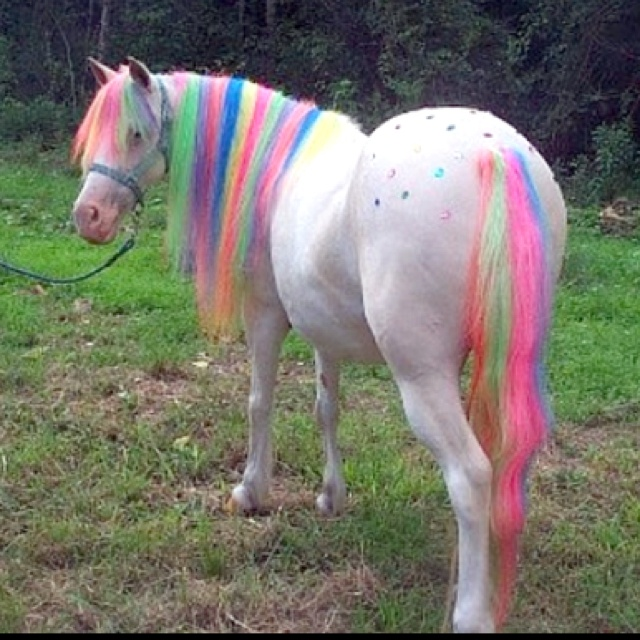

🌈 Our Whimsical Journey 🌈
Once upon a time, in a sun-kissed meadow nestled between rolling hills, a young dreamer named Lily discovered a secret portal. This portal didn’t lead to a far-off land; it led to a realm where pastel skies met emerald grass, and where the air smelled of cotton candy and adventure. Lily stumbled through the portal, her heart racing. And there, under the shimmering rainbow arch, she met them—the Ponies of Everglow. Their manes sparkled like stardust, and their eyes held galaxies within. Each pony embodied a different hue, a unique magic that danced through their veins.
The Bond That Blossomed
Lily spent her days with the ponies, brushing their silky coats and listening to their ancient tales. She rode on their backs through meadows ablaze with wildflowers, her laughter echoing across the hills. The ponies taught her secrets—the language of the wind, the art of moonbeam weaving, and the healing power of laughter. Among them was Starwhisper, the midnight-blue unicorn with a crescent moon on her flank. Starwhisper whispered forgotten constellations into Lily’s dreams, igniting her imagination. And then there was Sunbeam, the golden pegasus who carried sunlight in her wings. Sunbeam taught Lily to chase rainbows and find magic in everyday moments.The Promise
As seasons changed, so did Lily. She grew from a wide-eyed child into a spirited teenager. Yet her love for the ponies remained unwavering. She promised to protect their world, to keep their existence hidden from the ordinary. She vowed to share their enchantment with those who believed in wonder.Our Purpose
And so, dear visitor, we welcome you to Everglow Meadows. Our website isn’t just pixels and code; it’s a portal—a glimpse into the magical realm where ponies prance under moonlit skies. Here, you’ll find: Our Origin Story: Discover how Everglow Meadows came to be, fueled by childhood dreams and moonlit whispers. Meet the Ponies: Each pony has a tale to tell. From Stardust, the mischievous sprite, to Luna, the wise elder, they await your visit. Our Mission: To ignite the spark of wonder in every heart. We believe in rainbows after storms, in star wishes, and in the magic of believing.Join Us
So, fellow dreamer, step through our digital portal. Let the colors of Everglow wrap around you. Listen to the wind—it carries echoes of laughter and hoofbeats. And remember, even in the mundane, there’s a glimmer of magic waiting to be discovered.🌟 Welcome to Everglow Meadows. 🌟
Where ponies dance, and dreams take flight. Inspired by the whispers of childhood and the magic of imagination. 🦄✨

Meet Our Adorable Ponies

Baby Gusty: The Sunshine Unicorn 🌞

Baby Firefly: The Sky Soarer 🌟